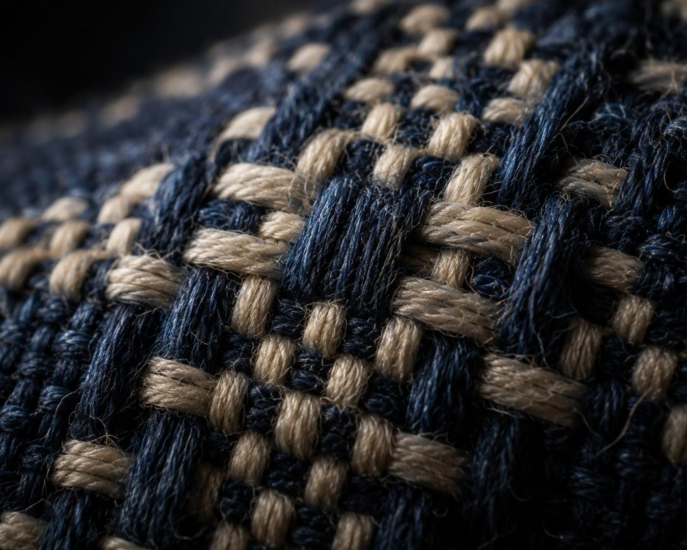
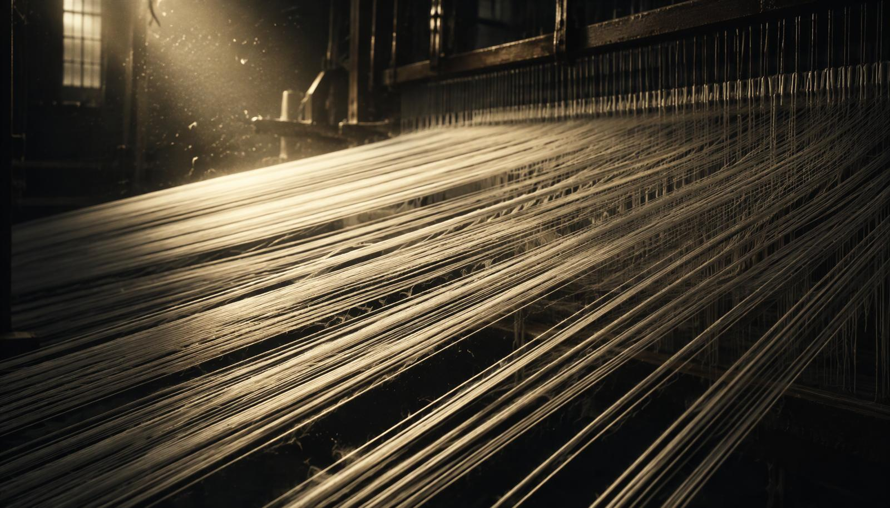
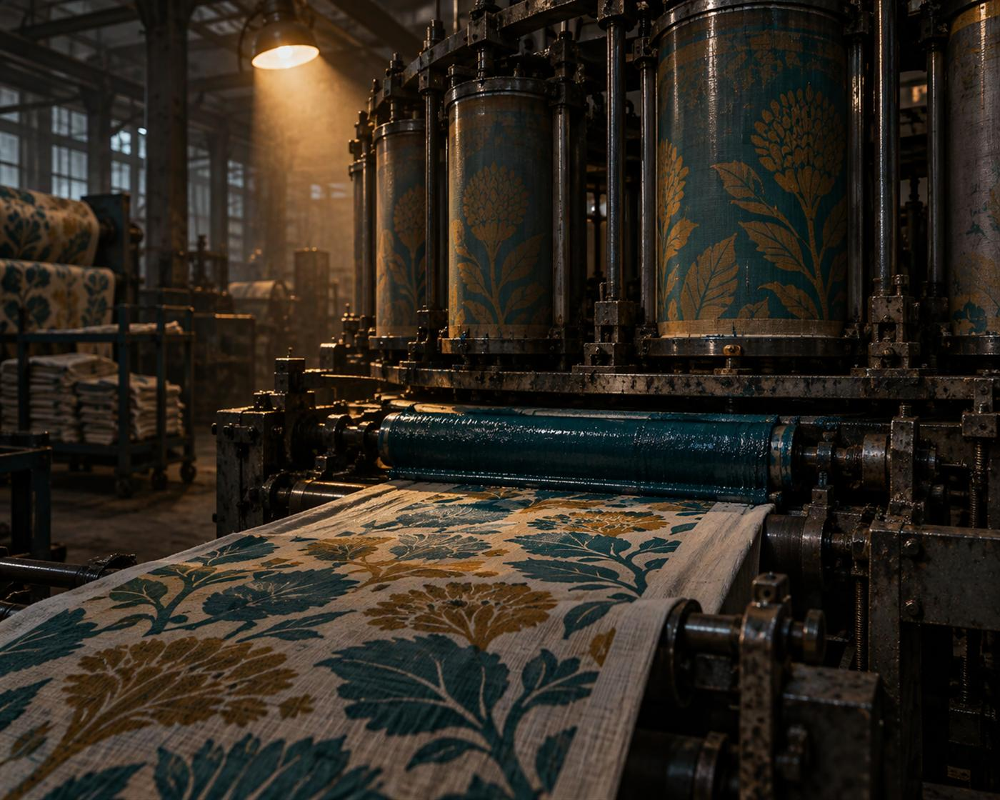
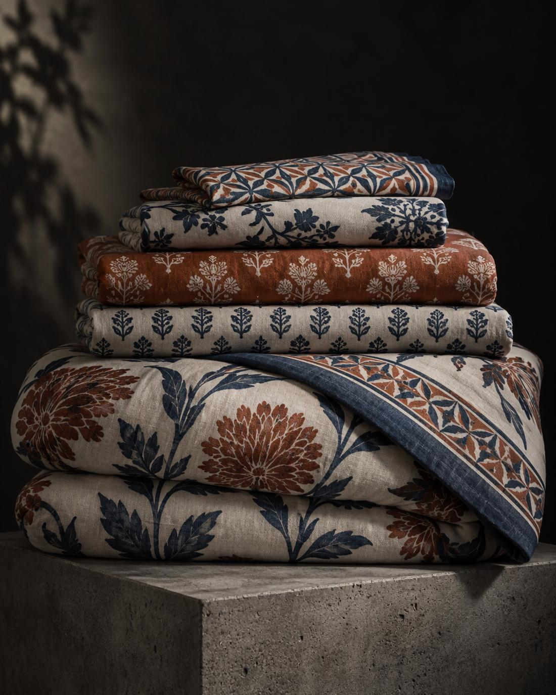
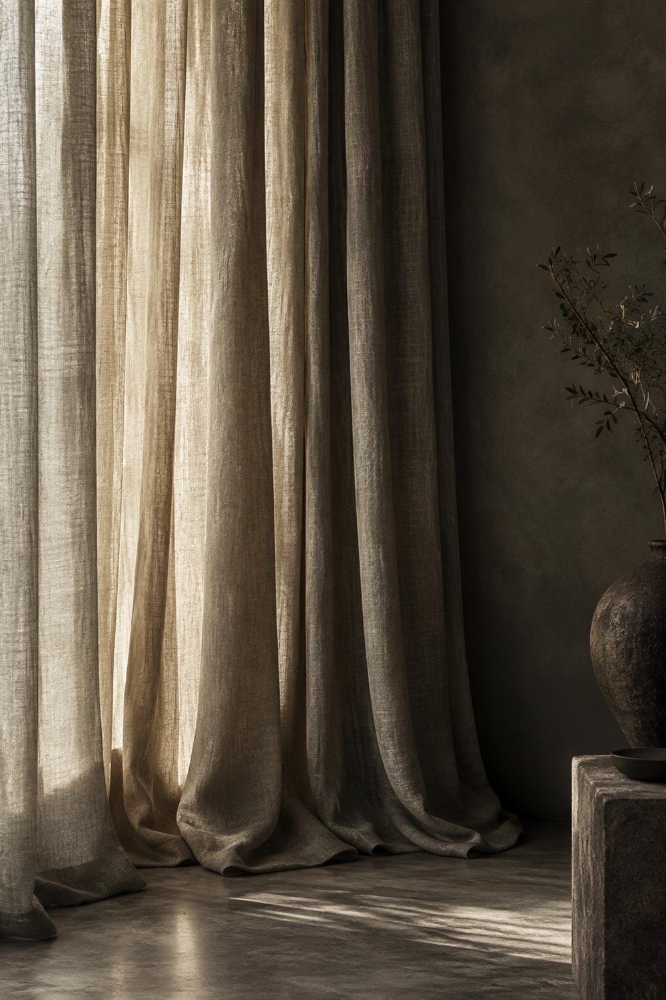
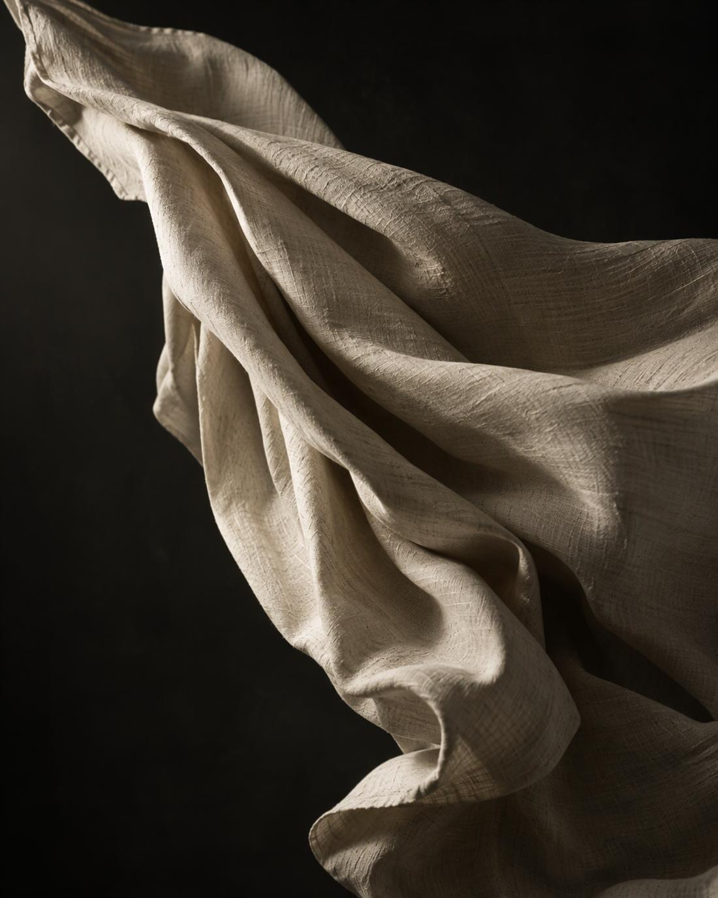

Sizing 01
Warp yarns are sized to survive the loom — the quiet step that decides fabric cleanliness later.
Textile printing & fabric processing
Faisalabad, Pakistan — a vertically integrated home textile house taking cotton from sizing to stitched finished goods since 1965.
Processing Industries (Pvt) Ltd — Commitment with Quality
More than fifty years of experience behind one of the region’s most reliable printing and processing houses: rotary, flatbed and digital, on woven and microfiber cloth, finished and packed for retail and mail order worldwide.
About us
Magna Group is a vertically integrated unit including sizing, warping, weaving, processing and stitching — so the yarn that enters is the finished bed sheet that leaves.
Being one of the pioneers in the trade, Magna made forays into fabric printing and processing and has grown into a reliable partner for retail, mail order and contract buyers across Europe, the Middle East and North America. Our philosophy is simple: give the client a single source for the whole job, with control over quality at every intermediate stage.
The product range covers bed linen, curtains, quilted products, furnishings, kitchen linen and apparel — in printed, dyed and white, on flat, dobby and jacquard constructions, plus a growing microfiber programme.
Single source. Weaving through stitching under one roof means shorter lead times and no blame passed between suppliers.
Print flexibility. Rotary for volume repeat patterns, flatbed for larger blocks, digital for sampling and small runs.
Finished to retail. Embellished and customised articles, packed and labelled to the buyer’s own programme.
Audit-ready. Compliance, traceability and social audits maintained across the group.
Vertical integration
Warp yarns are sized to survive the loom — the quiet step that decides fabric cleanliness later.
Yarn is beamed at even tension and density, giving the cloth its construction and weight.
Flat, dobby and jacquard goods produced in-house, greige ready for the processing floor.
Bleaching, dyeing, printing and finishing: rotary, flatbed and digital lines with full colour control.
Cutting, stitching, embellishment and packing into retail-ready bed linen and furnishing sets.




Collections
Fully embellished and customised articles for retail and mail order. Drag or scroll sideways — each range is built to the buyer’s own construction, weight and colour standard.
Printed, dyed and white bed sheet sets, fitted sheets, duvets and duvet covers, bed skirts and pillows.

Curtain panels and sofa covers in woven, burnout and coated constructions, made to measure for furnishing programmes.

Quilts, coverlets and padded bed tops, stitched and finished in our own sewing units.
The newer side of the range: soft, fast-drying microfiber goods for bath, kitchen and travel.
Tea towels, napkins and aprons — printed and dyed, packed as coordinated sets.
Upholstery, cushion covers and apparel fabric in plain dyed, printed, flock and puff-print finishes.
Printing & finishing
Eight rotary screens run repeat patterns at volume, flatbeds take the larger blocks and wide repeats, and digital handles sampling, small designer runs and photoreal designs without screens at all. Pigment, reactive and disperse printing are all supported, with finishing to match.
Certification & compliance
Demonstration content — certificate numbers and current scope should be confirmed against the originals before publication.
Enquiries
+(92) 41 2424070
71, 72, 74 — same exchange
Magna Processing Industries (Pvt) Ltd
Faisalabad, Pakistan
Bed linen · Curtains · Quilts
Kitchen linen · Microfiber · Furnishings
Digital prints in 7–10 days
Rotary runs from repeat order